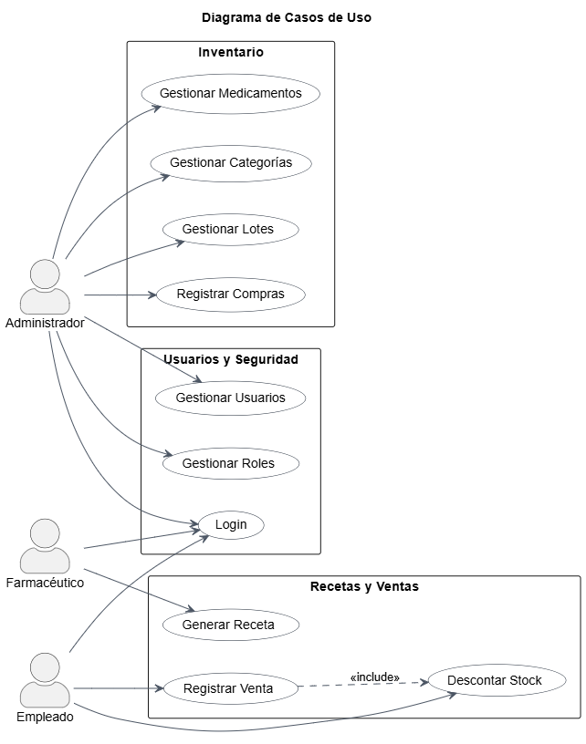
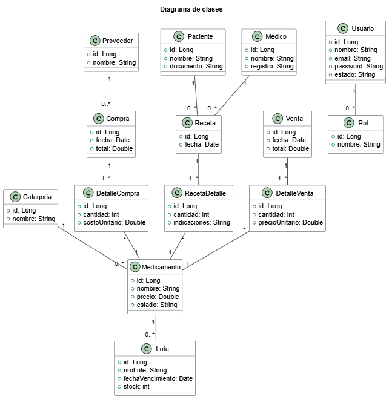
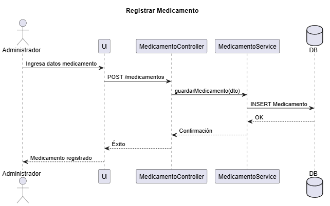
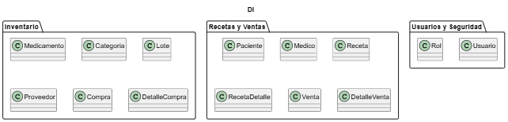

Gestión de medicamentos, control de stock y emisión de recetas.
El Sistema de Farmacia permite gestionar el inventario de medicamentos, registrar recetas médicas, controlar las ventas y administrar los usuarios que operan en la plataforma. Su objetivo es optimizar los procesos de la farmacia con trazabilidad y seguridad.
Gestión de medicamentos, categorías, lotes, proveedores y compras.
Creación de recetas, registro de pacientes y médicos, ventas y control de stock.
Autenticación de usuarios, asignación de roles y control de accesos.
A continuación, se muestran los principales diagramas de arquitectura y modelado:



